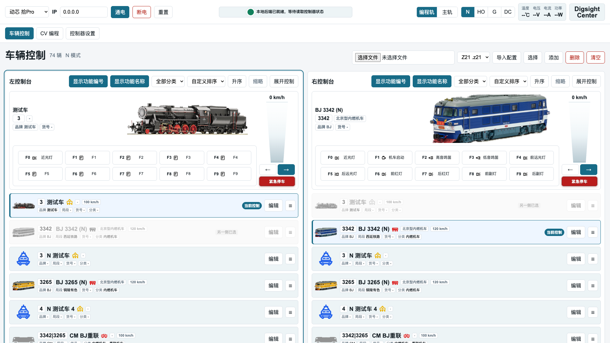
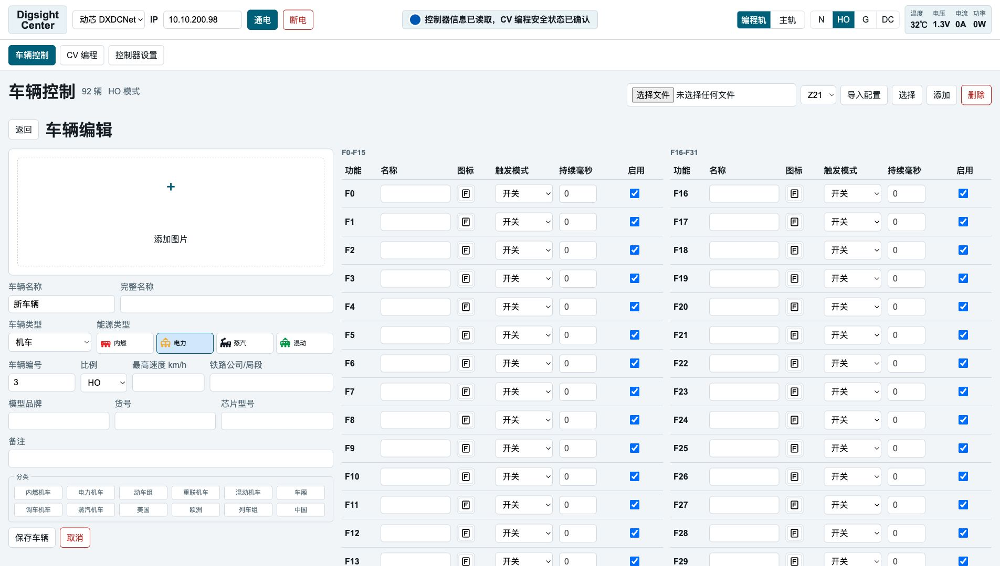
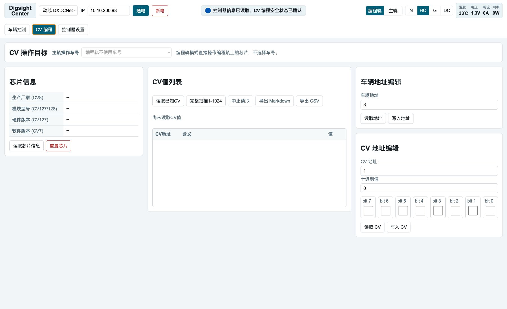
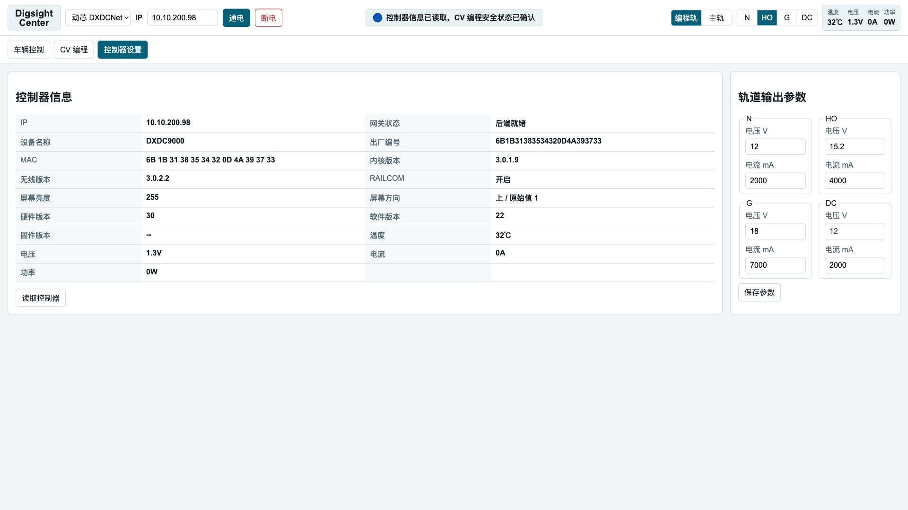

快速开始
- 启动本地网关：
./scripts/start_web.sh。脚本会在后台启动服务，关闭终端窗口不会停止网关；如需指定监听地址和端口，使用./scripts/start_web.sh -H 0.0.0.0 -P 8765。 - 需要 IPv6 访问时，可使用
./scripts/start_web.sh --host :: --port 8765；需要通过局域网域名或 mDNS 名称访问时，增加--trusted-host，例如./scripts/start_web.sh -H 0.0.0.0 --trusted-host layout.local。 - 本机打开
http://127.0.0.1:8765/。 - 确认顶部控制器类型和 IP，并把 IP 改成你的目标控制器地址。
- 点击“读取控制器”，确认页面已经获取最新控制器状态。
- 按实际目标选择“编程轨/主轨”和 N/HO/G/DC 操作模式。
- 在“车辆控制”选择导入格式并导入配置，或选择已有车辆开始操作。空车辆库首次启动会为 N/HO/G 各创建地址
3、地址4两台测试车和一个3+4重联控制车。
顶部控制区
顶部区域始终显示控制器类型、控制器 IP、通电/断电、运行状态、CV 编程目标、轨道模式和遥测信息。页面不再要求手工“连接/断开”；需要和设备通讯时，前端会先把当前控制器类型和 IP 同步给后端。
| 区域 | 用途 |
|---|---|
| 控制器品牌型号 | 选择控制器配置。当前下拉框显示控制器配置文件中的 display_name，默认是 动芯 拾Pro；后续新增控制器时仍使用同一入口。 |
| IP | 目标控制器地址。当前默认控制器为动芯 拾Pro，使用 DXDCNet 协议；修改地址后会让旧的控制器状态和 CV 安全快照失效。 |
| 通电 / 断电 | 读取到最新控制器状态后，手动发送轨道输出命令，并等待 Booster 状态回包确认结果。 |
| 重置 | 当前控制器配置 JSON 损坏时可用于恢复默认配置。点击后会先弹出确认框，列出本次会重置的文件；确认后只重置当前选择控制器的配置文件，只有全局运行态文件也损坏时才同时重置 data/app-state.json。 |
| 编程轨 / 主轨 | 决定 CV、地址和芯片信息操作的目标。编程轨不需要选择车辆；主轨必须在 CV 编程页面的“CV 操作目标”中选择车号，页面默认选择当前模式下第一台车辆。 |
| N / HO / G / DC | 决定车辆列表过滤、轨道输出模式和后端安全门。CV 与数码车辆控制支持 N/HO/G；G 比例与 N/HO 使用同一 DCC 路径。DC 只使用独立电压、方向和急停控制面板，并且只适用于可承受 DC 输出的车辆或负载。 |
| 温度、电压、电流、功率 | 来自控制器回包或缓存。无法真实读取时不伪造指标。 |
打开页面后，先确认控制器型号和 IP，执行读取控制器状态。状态读取成功后，再点击通电。页面不会在启动时自动给轨道通电。
返回顶部车辆控制

车辆库操作
车辆控制标题行右侧集中放置车辆库入口。这里的“选择”用于批量删除车辆，不会改变左右控制台当前控制的车辆。
- 导入配置：先选择配置格式和配置文件，再点击“导入配置”。当前公开界面支持 Z21 `.z21` 文件，后续新增格式仍使用同一入口。
- 添加：打开车辆编辑页面，手工创建普通车辆、车厢或编组控制车。
- 选择：进入批量删除选择模式。页面会切换为高密度缩略车辆网格，每辆车只显示缩略图、车号和车辆名称，方便一次选择多辆车。
- 删除：只在批量选择后删除已选车辆；删除前会弹出确认框。未选择车辆时，页面会提示先点击“选择”并勾选车辆。
- 清空：一次性清空全部车辆、车辆功能、分类关系、编组、导入记录和车辆图片文件。清空前会弹出确认框；控制器配置、CV 配置、厂商表和其它系统配置不会被清空。
双控制台
车辆控制采用左控制台和右控制台。两个控制台可以独立选择车辆、保存速度、方向和功能键状态。点击某一侧控制台或车辆后，键盘输入会路由到该侧。
选择 DC 模式时，车辆控制页切换为 DC 控制面板，只保留电压条、方向按钮和紧急停车按钮。DC 模式不渲染车辆列表、左右控制台或功能键，车辆选择、添加和删除入口会禁用。
- 同一辆车不能同时被左右控制台选择；另一侧会显示禁用态。
- 每个控制台都有独立的分类筛选、排序方式、升降序和功能名称显示开关。
- 每个控制台都有“缩略”按钮，用于把该控制台车辆列表切换为缩略车辆选择。缩略模式只用于给当前控制台选车，不参与批量删除。
- 缩略车辆选择隐藏品牌、分类、货号等详情，只保留缩略图、车号和车辆名称；车辆很多时可以在一屏看到更多候选车辆。
- “显示功能编号”控制是否显示 F0、F1 等编号；“显示功能名称”控制是否显示功能文字。
- 显示功能名称时，普通状态显示 F0-F9，展开后显示 F10-F31；隐藏功能名称时，控制区直接显示 F0-F31，展开按钮禁用。
速度与方向
- 竖向速度条按 0-126 DCC 步进控制，颜色从底部向上填充。
- 如果车辆设置了最高速度，页面按比例显示 km/h。
- 方向按钮用于切换前进/后退，红色“紧急停车”将速度设为 0。
键盘控制
| 按键 | 作用 |
|---|---|
| ↑ / ↓ | 增加或降低当前控制台速度。 |
| ← / → | 切换当前控制台方向。 |
| Space | 当前控制台车辆停车，不等同于轨道断电。 |
| 0 到 9 | 触发当前控制台 F0 到 F9。 |
车辆编辑

基本信息
可编辑车辆名称、完整名称、车辆类型、能源类型或车厢子类、车辆编号、比例、最高速度、铁路公司/局段、模型品牌、货号、芯片型号、备注、分类和图片。
功能表
功能表固定显示 F0-F31。每个功能可设置名称、图标、触发模式、持续毫秒和启用状态。
功能触发模式
- 开关：点击一次保持按下，再点击恢复。
- 点击：鼠标或键盘释放时恢复。
- 延时：点击后按持续毫秒自动恢复。
图片与图标
车辆图片支持 PNG、JPEG 和 WebP。较大的图片会在浏览器内压缩为 WebP 后上传；压缩后仍超过限制时，页面会提示选择更小的图片。功能图标来自本地图标库，不依赖在线资源；缺失映射时显示默认 F 图标并保留功能编号和文字。
返回顶部配置导入
在车辆控制标题行右侧先选择导入格式，再选择配置文件，最后点击“导入配置”。同一行还提供“选择”“删除”“清空”，分别用于进入批量删除选择模式、删除已选车辆和清空全部车辆库。当前导入格式下拉框只有 Z21 `.z21`，后续可通过同一导入接口增加其它配置格式。
- 当前 Z21 文件名主干中以分隔符独立包含 HO、N 或 G 时，会分别导入为 HO、N 或 G。
- HO/N/G 中同名分类会按名称共享，车辆仍按所属模式过滤。
- Z21 type=3 车辆会作为重联或编组控制入口保存。
- 导入后的车辆、功能键、分类和编组保存在本地 SQLite。
- 导入上传、Z21 数据库和图片都有大小限制；超限时页面会显示结构化错误，不会继续写入本地数据库。
- 清空车辆库会删除本地车辆图片文件，但不会修改控制器配置文件、CV 配置文件或厂家 profile。
CV 编程

CV 操作目标
页面顶部的“主轨操作车号”下拉框用于主轨模式下的 POM 目标选择。切换到主轨时必须选择车号，页面默认选择当前 N/HO/G 模式下的第一台车辆；切换回编程轨时该下拉框不可选，因为编程轨直接面向编程轨上的当前解码器。
主轨读取芯片信息或 CV 时，如果主轨没有对应地址的车辆，或解码器不支持主轨读回/RailCom，控制器会返回未确认结果；页面会提示“主轨 CV 读取未收到车辆确认”。这类场景应确认车号和主轨车辆，或改用编程轨读取。
芯片信息
“读取芯片信息”会读取 CV8、CV7，并在 Digsight 芯片上补读 CV127/CV128。结果以“名称、值”两列表格展示。厂家名称优先使用本地 profile 映射；没有匹配 profile 时才使用厂家 ID 注册表名称。
CV 值列表
- “读取已知CV”先读 CV8，再按厂家 profile 和标准 CV 表读取有定义的 CV。
- “完整扫描1-1024”逐个扫描全部 DCC CV，是慢操作。
- 读取进度显示为已完成数量/总数；已知 CV 的总数来自配置文件，识别厂家后会包含厂家 profile 中定义的 CV。
- 读取时每读取到一个 CV 结果就立即追加到列表；读取失败的行只显示错误摘要，点击摘要可查看完整详情。
- “中止读取”会停止发起后续 CV 读取，并保留已读取结果。
- 支持导出 Markdown 和 CSV。
车辆地址编辑
地址范围为 1 到 9999。编程轨目标可以不选择车辆；主轨目标使用“主轨操作车号”下拉框选择的本地车辆地址作为 POM 目标。
CV 地址编辑
CV 地址范围为 1 到 1024，CV 值范围为 0 到 255。页面提供单行 8 bit 编辑视图，方便同时查看 bit 位和十进制值。
控制器设置

“读取控制器”会按当前控制器类型调用对应 adapter。当前动芯 D9000/拾Pro adapter 使用 DXDCNet 协议执行只读查询，刷新设备名称、MAC、硬件版本、软件版本、无线版本、RAILCOM、屏幕亮度、屏幕方向、温度、电压、电流和功率等缓存信息。
N/HO/G/DC 的限流参数会通过动芯参数写入命令下发到控制器，写入后再读取同一参数校验；如果读回值不一致，页面会报错且不会把本地缓存当作已生效。N/HO/G 电压输出值仍按已验证固定枚举处理；DC 控制页会把电压条数值转换为运行态 DXDCNet 轨道输出值。
返回顶部重联与编组
编组用于把多辆车作为一个控制入口管理。Z21 的 train_list 会导入为编组；如果对应 type=3 车辆，则该车辆会作为车辆列表中的控制入口。
- 重连机车：多个车头相连，通常成员全是机车。
- 动集列车：控制车和动力车组合，当前由用户手工选择。
- 列车编组：机车加普通车厢或其它非机车成员。
编组速度、方向和停止会 fan-out 到成员车辆地址。成员开启“反转运行”时，方向会对该成员取反。开启“同步控制功能”后，功能键状态会同步发送到全部成员。
返回顶部安全边界
- 浏览器不直接发送 UDP，所有硬件通讯都通过本地 Python 网关。
- 网关面向可信局域网使用，用户界面不要求输入操作令牌；服务端会拒绝明显跨站的状态变更请求，并要求 JSON 状态变更接口使用
application/json。危险或不可逆操作使用普通确认提示。 - 后端不会只依赖前端按钮状态放行，仍会执行模式、状态、安全快照、参数范围和确认字段等服务端安全门。
- CV、地址、芯片信息、车辆控制和编组控制支持 N/HO/G 的 DCC 数码模式。
- G 比例与 N/HO 使用同一 DCC 数码路径，并受相同服务端安全门约束；DC 不使用数码车辆控制和 CV 编程路径，只能使用独立 DC 控制面板。
- DC 模式只适用于可承受 DC 输出的车辆或负载；在确认目标设备支持前，不要执行 DC 上电、方向切换、电压调整或急停实测。
- 修改 IP、UDP 端口、本地端口、校验算法、轨道模式或 CV 编程目标，或者控制器通讯失败，都会让旧安全快照失效。
可编辑配置文件
本项目的运行态数据和 CV 元数据都保存在本地文件中。手工修改前建议先运行 ./scripts/stop_web.sh 停止网关，避免页面操作和手工编辑同时写同一文件。所有配置都必须是合法 JSON；修改后重新打开页面、重新读取控制器或重新读取 CV 元数据即可生效。
| 路径 | 用途 | 是否建议手工修改 |
|---|---|---|
data/app-state.json |
保存页面运行态状态，包括当前控制器类型、轨道模式、CV 编程目标、遥测缓存和页面状态；不保存具体控制器 IP。 | 通常不需要手工修改；如果要切换当前控制器类型，只修改 controller.kind。 |
config/controllers/Digsight_D9000.json |
动芯 D9000/拾Pro 控制器运行态配置，保存控制器显示名、使用协议、控制器 IP、UDP 目标端口、本地 UDP 端口、校验算法、轨道输出参数和控制器私有设置。页面顶部控制器下拉框显示这里的 display_name，IP 输入框读取和写入这里。首次启动时如果文件不存在，网关会从本地 SQLite 控制器默认配置生成它。 |
可以手工修改；默认 IP 为 0.0.0.0，表示未配置真实控制器。这个 JSON 是运行态文件，公开仓库不跟踪。真实硬件测试优先使用测试专用环境变量。 |
config/cv/manufacturers.json |
CV8 厂家 ID 到厂家名称的列表，以及未分配编号说明。 | 可以手工维护；用于没有 profile 映射时的厂家名称兜底。 |
config/cv/profile-map.json |
CV8 厂家 ID 到厂商 profile 文件名的映射。 | 可以手工维护；同一个厂家 ID 如果配置了 profile，会优先显示 profile 中的厂家名称和 CV 定义。 |
config/cv/standard.json |
通用标准 CV 名称，以及 CV 范围含义模板。 | 可以手工维护；新增“读取已知CV”项目时写入 cv_definitions。 |
config/cv/profiles/*.json |
厂商专用 CV 名称、厂商显示名、别名和复位方法。 | 可以手工维护；新增厂商 profile 后要同步修改 profile-map.json。 |
控制器配置
data/app-state.json 会在首次启动时自动创建，只保存当前选择的控制器类型和页面运行态。页面顶部控制器名称、IP、端口和协议来自当前控制器自己的配置文件；当前动芯 D9000/拾Pro 使用 config/controllers/Digsight_D9000.json。如果该文件不存在，网关会先从 data/vehicles.sqlite3 中的控制器默认配置生成它。
每种控制器使用自己的运行态配置文件，公开仓库不跟踪这些 JSON。控制器显示名、使用协议、IP、端口和校验算法都从该文件读取；后续如果厂商固件改变默认端口，优先手工修改对应控制器配置文件，不需要改代码。当前已知的 D9000 默认通信参数为目标 UDP 12000、本地 UDP 6667、校验算法 xor，当前协议字段为 DXDCNet。同一种协议可以被多个控制器配置复用，后续新增 ECoS 等协议时也写在对应控制器配置文件里。
如果当前控制器配置文件不是合法 JSON，页面会保留损坏文件，不会自动覆盖。状态栏会提示“当前控制器配置文件无效”，详情建议手工修复该 JSON 文件，或点击顶部“重置”恢复默认配置。重置前的确认框会列出本次会重置的文件；通常只有当前控制器配置文件，只有 data/app-state.json 也被检测为损坏时才会同时列入。
{
"controller": {
"kind": "digsight_controller",
"track_mode": "n",
"programming_target": "programming_track"
}
}{
"display_name": "动芯 拾Pro",
"field_descriptions": {
"ip": "控制器 IP 地址；0.0.0.0 是安全占位值，真实使用前需要改成控制器实际地址。",
"track_profiles.<mode>.target_voltage_v": "该模式的目标/配置电压，供界面和 DC 输出换算使用；不是控制器实时回报电压。",
"track_profiles.<mode>.target_current_limit_ma": "该模式的目标/配置限流值，保存后可写入控制器；不是实时电流读数。"
},
"ip": "0.0.0.0",
"protocol": "DXDCNet",
"settings": {},
"transport": {
"kind": "udp",
"udp_port": 12000,
"local_udp_port": 6667,
"udp_checksum_algorithm": "xor"
},
"track_profiles": {
"n": {"target_voltage_v": 12.0, "target_current_limit_ma": null},
"ho": {"target_voltage_v": 15.2, "target_current_limit_ma": null},
"g": {"target_voltage_v": 18.0, "target_current_limit_ma": null},
"dc": {"target_voltage_v": 12.0, "target_current_limit_ma": null}
}
}kind是控制器类型，当前可用值为digsight_controller。display_name是页面控制器下拉框显示的名称；默认使用官方销售名称“动芯 拾Pro”。protocol是该控制器使用的通讯协议；当前动芯 D9000/拾Pro 使用DXDCNet，后续其它控制器可以声明复用同一协议或使用 ECoS 等其它协议。field_descriptions是配置文件内的字段说明。JSON 不支持语法注释，所以用普通 JSON 字段保存说明文本，程序读取控制器配置时不会把它当作运行参数。通用字段说明保持协议中立，具体控制器可以在自己的 adapter 中补充专用说明。ip在控制器配置文件中，是目标控制器地址；默认0.0.0.0只是安全占位，不代表真实控制器。transport保存控制器通信配置；D9000 当前使用udptransport，已知默认值为目标 UDP12000、本地 UDP6667、校验算法xor，如果手工改错可以按示例改回。settings用于保存该控制器独有的配置；未来新增控制器时，每种控制器使用自己的配置文件。track_mode可为n、ho、g或dc。programming_target可为programming_track或main_track。
默认测试不需要真实控制器。需要在自己的环境中运行真实控制器探测测试时，设置测试专用环境变量 DIGSIGHT_TEST_D9000_IP。该变量只被测试帮助模块读取，不影响页面运行时配置；未设置时真实硬件测试会跳过。
CV 厂家列表
config/cv/manufacturers.json 管理 CV8 厂家 ID 到厂家名称的映射。键名使用数字字符串，值是显示名称。source 和 url 是说明字段；known_ids 和 unassigned_notes 会被程序读取。
{
"source": "NMRA S-9.2.2 Appendix A Manufacturer ID codes",
"url": "https://www.nmra.org/",
"known_ids": {
"86": "Wekomm Engineering, GmbH",
"250": "自定义厂家"
},
"unassigned_notes": {
"8": "未分配厂家 ID 8；8 常见为写入 CV8 的复位值"
}
}厂家名称显示优先级是：profile-map.json 命中的厂商 profile 名称优先；没有 profile 时才使用 manufacturers.json；仍找不到时显示“厂家 ID x”。
CV profile 映射
config/cv/profile-map.json 把 CV8 厂家 ID 映射到 config/cv/profiles/ 下的 profile 文件名主干，不包含 .json 后缀。
{
"source": "Project mapping from NMRA manufacturer ID to editable CV profile file",
"manufacturer_profiles": {
"86": "okdcc",
"250": "my-decoder"
}
}上面的 "250": "my-decoder" 表示系统会读取 config/cv/profiles/my-decoder.json。如果某个厂家 ID 与公开注册表冲突，或者某些厂商尚未申请编号，也可以在这里把实际芯片映射到本地 profile。
标准 CV 列表
config/cv/standard.json 用于通用 CV 含义。cv_definitions 是明确 CV 编号到含义的映射；cv_ranges 是范围模板，用于完整扫描或自定义读取时显示含义。
{
"profile_name": "NMRA S-9.2.2",
"source": "NMRA S-9.2.2 Configuration Variables",
"cv_definitions": {
"1": "短地址",
"7": "软件版本",
"8": "生产厂家"
},
"cv_ranges": [
{
"start": 33,
"end": 46,
"meaning_template": "函数映射 F{index0}",
"index_offset": 0
}
]
}- CV 编号必须在
1..1024范围内。 - 要让“读取已知CV”自动读取某个 CV，必须把它写进
cv_definitions。 cv_ranges只补充含义，不会让“读取已知CV”自动读取整个范围。meaning_template支持{cv}、{index0}和{index1}占位符；index_offset可选，默认 0。
厂商 profile
厂商 profile 放在 config/cv/profiles/*.json。profile 可以覆盖标准 CV 含义、定义厂商专用 CV、配置芯片复位方法，并为芯片信息页面提供厂家显示名。
{
"profile_name": "My Decoder",
"manufacturer_name": "自定义厂家",
"source": "厂商说明书或用户实测记录",
"aliases": ["MyDecoder", "自定义解码器"],
"reset_method": {
"cv": 8,
"value": 8,
"label": "恢复出厂设置",
"source": "厂商说明书",
"default_address": 3,
"requires_power_cycle": true,
"notes": [
"复位后地址通常回到 3"
]
},
"cv_definitions": {
"8": "生产厂家/复位",
"63": "总音量"
},
"cv_ranges": [
{
"start": 257,
"end": 300,
"meaning_template": "厂商扩展 CV {cv}"
}
]
}manufacturer_name会优先用于芯片信息中的厂家名称显示。cv_definitions会覆盖同编号标准 CV 含义，并且会加入“读取已知CV”的读取清单。reset_method.cv和reset_method.value决定“重置芯片”按钮写入哪个 CV 和数值；配置错误可能导致真实解码器被错误写入，修改后务必核对说明书或实测证据。default_address用于复位确认提示，表示复位后通常回到的地址。requires_power_cycle表示复位后是否需要重新上电。
二次开发扩展
项目内保留了两个不会出现在前端页面里的代码样例，用来验证架构能够接入多种控制器和多种配置导入格式，也方便开发者添加新的适配。
| 样例文件 | 用途 |
|---|---|
server/controllers/example.py |
样例控制器 adapter，展示 kind、protocol、配置文件名、能力声明、transport descriptor、endpoint readiness、配置字段说明和 readiness 钩子的放置位置。 |
server/importers/example.py |
样例配置导入 adapter，展示导入格式 descriptor、扩展名、分类合并策略，以及把外部字节解析成规范化车辆、功能键、分类、编组、来源摘要和错误列表的边界。 |
这两个样例默认不注册到 registry，因此不会出现在控制器或导入格式下拉框中。新增真实控制器或导入格式时，应先基于样例创建独立 adapter，再显式注册到对应 registry，并补充专用测试和文档；不要把某个协议或某种导入格式写进通用 HTTP API 或前端主流程。
返回顶部本地数据
| 路径 | 内容 |
|---|---|
data/app-state.json |
当前控制器类型、轨道模式、CV 编程目标、遥测缓存和页面运行状态。 |
config/controllers/Digsight_D9000.json |
动芯 D9000/拾Pro 控制器运行态配置；缺失时由 SQLite 控制器默认配置生成，公开仓库不跟踪。 |
data/vehicles.sqlite3 |
车辆、功能键、分类、编组、导入记录和 Z21 映射关系。 |
data/vehicle-images/ |
Z21 导入或用户上传的车辆图片。 |
config/function-icons.json |
本地功能图标目录、来源、许可证、关键词和别名。 |
config/cv/ |
CV 厂家、标准 CV、厂商 profile 和复位方法配置。 |
测试与验证
默认测试只使用 mock 和仓库内 tests/fixtures/ 样例，不需要真实控制器，也不需要本机私有文件。不要把真实控制器 IP 或本地文件路径写进测试代码、README 或本手册。
使用 Python 3.10+ 解释器执行测试；下面用 python3 表示已经满足版本要求的解释器。如果系统默认 python3 低于 3.10，请替换为 python3.10、python3.11 或其它符合要求的命令。测试可以直接使用仓库内的本地协议 package，不需要先执行 editable install；运行测试前把项目根目录和两个 package 的 src 目录加入 PYTHONPATH 即可。
python3 -m pip install -r requirements-dev.txt
export PYTHONPATH="$PWD:$PWD/packages/train-dcc/src:$PWD/packages/digsight-dxdcnet/src${PYTHONPATH:+:$PYTHONPATH}"
python3 -m unittest discover -s tests -v
python3 scripts/check_coverage.py
for file in assets/js/*.js; do node --check "$file" || exit 1; done
python3 -m compileall server tests packages如果需要在自己的环境中额外验证真实控制器探测，使用测试专用环境变量传入控制器地址，不需要修改运行态控制器配置文件，也不要修改公开测试文件：
export DIGSIGHT_TEST_D9000_IP="<controller-ip>"
python3 -m unittest tests.server_tests.test_controller_probe -vDIGSIGHT_TEST_D9000_IP 只影响测试，不影响页面运行时配置；未设置时真实硬件测试会跳过。需要使用本地 Z21 导出文件做导入回归时，再通过环境变量传入：
export DIGSIGHT_TEST_Z21_HO_FILE="<ho-z21-file-path>"
export DIGSIGHT_TEST_Z21_N_FILE="<n-z21-file-path>"
python3 -m unittest tests.server_tests.test_optional_external_inputs -vconfig/controllers/Digsight_D9000.json是动芯 D9000/拾Pro 的运行态配置文件；页面运行读取这里的控制器显示名、协议、IP 和通信端口。文件缺失时由 SQLite 默认配置生成，公开仓库不跟踪。DIGSIGHT_TEST_D9000_IP是真实硬件探测测试的可选控制器地址；未设置时对应测试会跳过。DIGSIGHT_TEST_Z21_HO_FILE和DIGSIGHT_TEST_Z21_N_FILE是可选外部样本；未设置时对应测试会跳过。- 外部文件测试只验证导入器能读取用户提供的文件，并检查基础摘要和轨道模式；具体车辆数量仍应由你的样本和业务预期决定。
排障
页面打不开
lsof -nP -iTCP:8765 -sTCP:LISTEN
curl http://127.0.0.1:8765/api/health如果需要停止本项目后台网关，运行 ./scripts/stop_web.sh；如果端口被其它进程占用，可以停止该进程后重新运行 ./scripts/start_web.sh -P 其它端口。如果页面通过域名可以打开但操作被拒绝，请使用 --trusted-host 把该域名加入网关信任列表。
控制器无响应
- 确认 IP 是否正确。
- 确认运行页面的主机和控制器在同一局域网。
- 点击“读取控制器”刷新状态。
- 查看顶部状态框中的错误摘要和详情。
CV 或车辆控制被拒绝
- 确认当前模式是 N、HO 或 G；DC 模式不能使用 DCC CV 或车辆控制路径。
- 确认已读取控制器，并获取最新安全状态。
- 主轨目标需要先选择车辆，并确认轨道已通电。
- 编程轨目标需要确认编程轨状态安全。